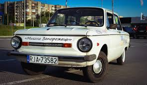

zaporozec


ЗАЗ-966 «Запорожець» (у народі — «вухань», «вухатий», «чебурашка» ) — радянський легковий автомобіль особливо малого класу. Випускався на автомобільному заводі в місті Запоріжжі з 1966 — 12 жовтня з конвеєра заводу «Комунар» зійшли перші моделі «ЗАЗ-966» — по 1974 рік з модифікаціями, причому перший рік випускалася лише «перехідна» модифікація 966В із застарілим 28-сильним двигуном — виробництво 1,2-літрового 40-сильного мотора МеМЗ-966 було готове лише на наступний рік.
detali